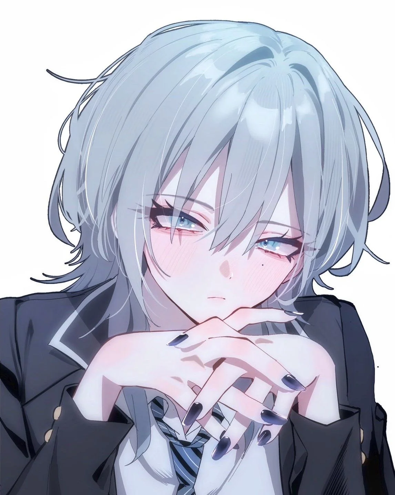

A Story with Dennis
Proje adı yakında açıklanacak.
Karakterlerin yalnızca ekranda görünmediği; sesleri, suskunlukları ve kararlarınla hafızanda yer ettiği anlatı odaklı deneyimler.
Her seçimin bir izi var.
Bir visual novel bizim için yalnızca metin okumak değil; bir karakterin bakışında, duraksamasında ve verdiğin kararın ağırlığında yaşamaktır.
Aderion Studios’ta diyalogların doğallığına, sahne geçişlerinin temposuna ve oyuncuya gerçekten söz hakkı tanıyan dallanmalara odaklanıyoruz. Küçük bir kararın bile birkaç bölüm sonra bambaşka bir duyguyla geri dönmesini seviyoruz.
Karakterler
KONSEPT AŞAMASINDAKendi kusurları, mizahı ve kırılganlıklarıyla gerçek hissettiren, hikâye bittiğinde bile akılda kalan karakterler.
Bu hikâyede kimlerle tanışacağını henüz paylaşmıyoruz. Karakterler ve onlara ait hikâyeler burada yerini alacak.
Hikâyenin arkasındaki ekip
Aderion Studios ekibi ve stüdyodaki görevleri. Projeye özel katkılar geliştirme sürecinde paylaşılacak.
Geliştirme durumu
Geliştirme aşamasındaŞu anda konsept ve anlatı tasarımı üzerinde çalışıyoruz. Hikâyenin temellerini, karakterleri ve görsel yönünü şekillendiriyoruz; çıkış tarihi henüz açıklanmadı.
- 01Konsept & AnlatıŞu an buradayız
- 02GeliştirmePlanlanan
- 03YayınHenüz açıklanmadı
Oyundan Kareler
Oyunun görsel dünyasına bir bakış. Şimdilik konsept referanslarını paylaşıyoruz; oyun içi ekran görüntüleri geliştirme sürecinde eklenecek.


Yaklaşımımız gelişiyor.
Visual Novel projemiz şu an konsept ve anlatı tasarımı aşamasında. Paylaşılan görseller, stüdyonun hedeflediği görsel tonu yansıtan referanslardır.